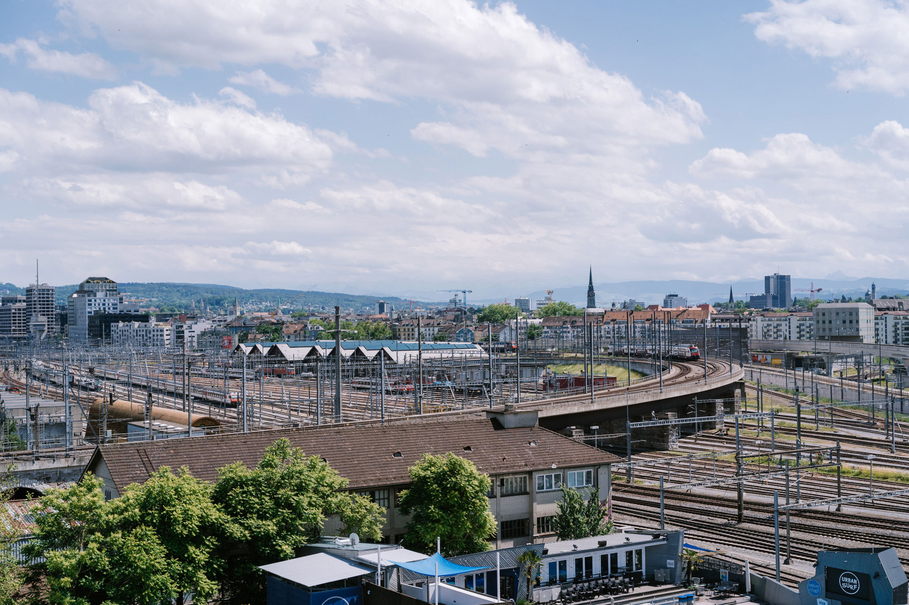
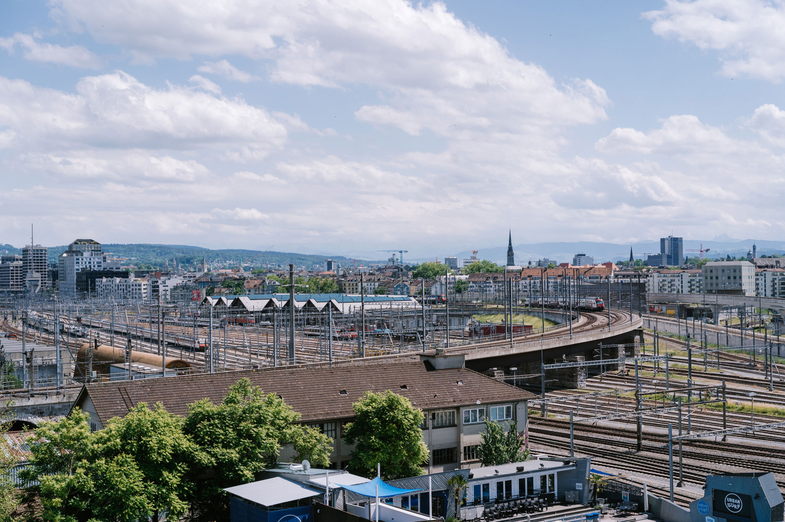

Den Name hat der Turm von der Marke «Freitag». Das bekannte Zürcher Label produziert Taschen aus alten Lastwagenplanen. In den ersten vier Containern findet man eine der grössten Auswahlen der recycelten Taschen. Zu beachten sind die Öffnungszeiten. Der Turm ist nur zu Store Zeiten geöffnet. Weiter geht eine Treppe bis ganz nach oben. Der Freitag Tower steht im urbanen Quartier im Kreis 5. Nebenan lädt der Gerolds Garten für einen Drink oder ein Glacé ein und die naheliegenden Viaduktbögen zum Shoppen oder Essen.
Vom Bahnhof Hardbrücke ist es ca. ein 3-Minuten-Fussmarsch und der Turm ist fast nicht zu übersehen.

Hardbrücke, Prime Tower, Gleise, Gerolds Garten
Bahnhof Hardbrücke
Shopping, Gemütlich, Sightseeing
Gerolds Garten, Gerold Chuchi, Clouds
Lade auch Du Dein Bild hoch und sei ein Teil des «Züribuechs». Dein Foto wird nach dem Upload geprüft und innert 24h aufgeschaltet.

Samira Duddek
Interaction Designerin HF 2022
© Samira Duddek | AGB
 
